Mujeres en la ciencia
El Día Internacional de la Mujer y la niña en la Ciencia se celebra el día 11 de febrero. Este día fue proclamado en 2015 por la Asamblea General de las Naciones Unidas para conseguir el acceso y la participación plena y equitativa en la ciencia de mujeres y de niñas.